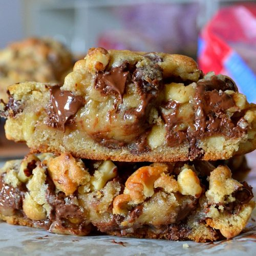

Pasta alla vodka

Description
The most delicious choc chip cookie you will ever eat, based on Levain
Bakery in NYC.
Ingredients
- 1 cup Cold Butter cut into small cubes
- 1 cup Brown Sugar
- 1/2 cup Sugar
- 2 Eggs
- 1 1/2 cups Cake Flour*
- 1 1/2 cups Flour
- 1 teaspoon Cornstarch
- 3/4 teaspoon Baking Soda
- 3/4 teaspoon Salt
- 2 cups Chocolate Chips
- 2 cups Chocolate Chips
- 2 cups Walnuts roughly chopped
Steps
- Preheat the oven to 210 degrees celcius.
-
In a large mixing bowl, cream together cold cubed butter, brown sugar,
and sugar for 4 minutes or until creamy.
- Add eggs, one at a time, mixing well after each one.
-
Stir in flours, cornstarch, baking soda, and salt. Mix until just
combined to avoid overmixing. Stir in chocolate chips and walnuts.
-
Separate dough into large balls and place on lightly colored cookie
sheet. They are bigger than you think! You will fit 4 cookies on one
large cookie sheet. The dough makes 8 extra large cookies.
-
Bake for 9-12 minutes or until golden brown on the top. Let them rest
for at least 10 minutes to set.